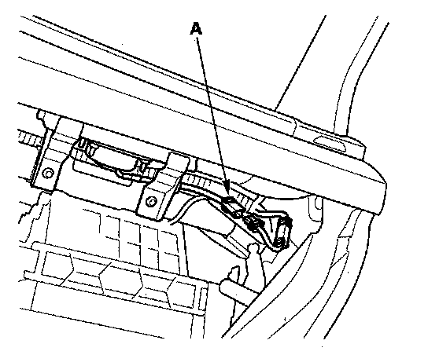
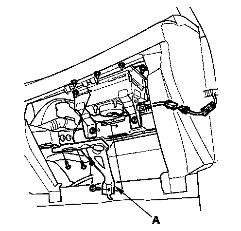
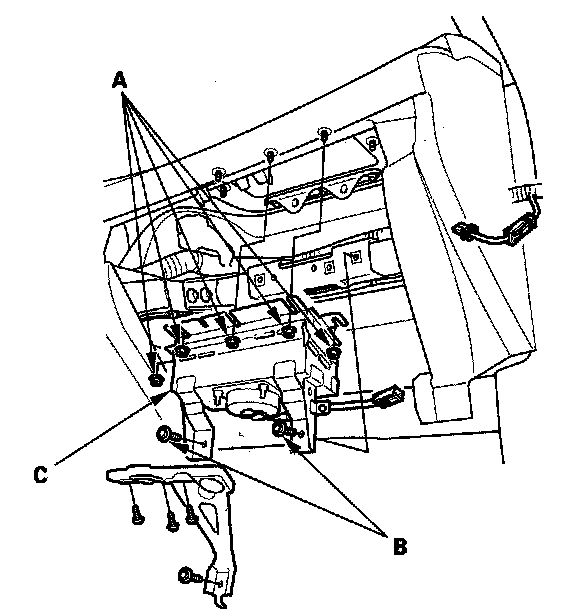
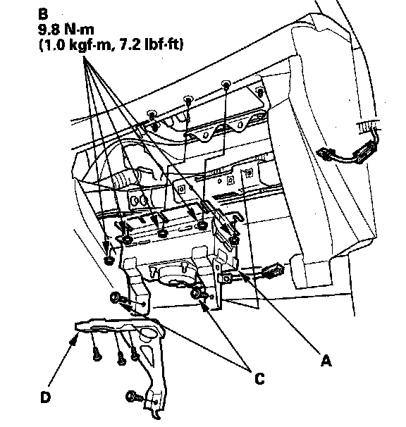
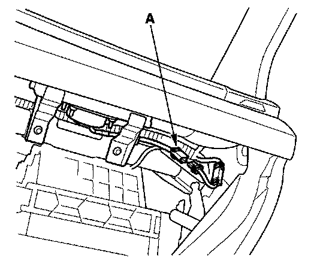

Front Passenger's Airbag
Front Passenger's Airbag ReplacementRemoval
NOTE: If the front passenger's airbag has been deployed, refer to the install for after a collision where the front passenger's airbag deployed.
1. Disconnect the negative cable from the battery, and wait at least 3 minutes before beginning work.
2. Remove the glove box.

3. Disconnect the front passenger's airbag 4P connector (A) from dashboard wire harness.

4. Remove the bracket (A).

5. Remove the mounting nuts (A) and mounting bolts (B) from the bracket. Remove the front passenger's airbag (C).
Installation

1. Place the new front passenger's airbag (A) into the bracket. Tighten the front passenger's airbag mounting nuts (B) and mounting bolts (C).
2. Reinstall the bracket (D).

3. Connect the front passenger's airbag 4P connector (A) to dashboard wire harness, then reinstall the glove box.
4. Reconnect the negative cable to the battery.
5. Connect the HDS and clear the DTCs.
6. After installing the airbag, confirm proper system operation: Turn the ignition switch ON (II); the SRS indicator should come on for about 6 seconds and then go off.